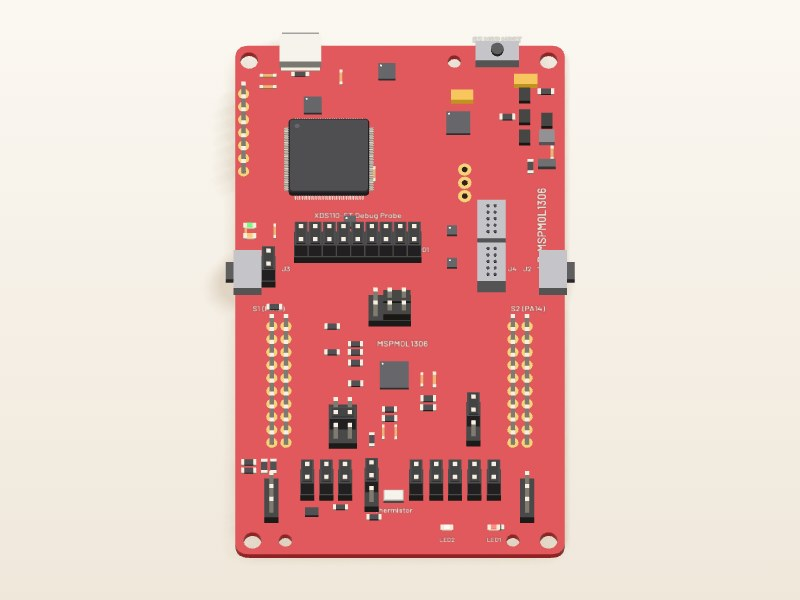
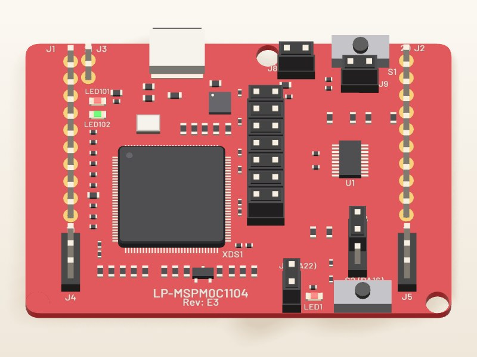
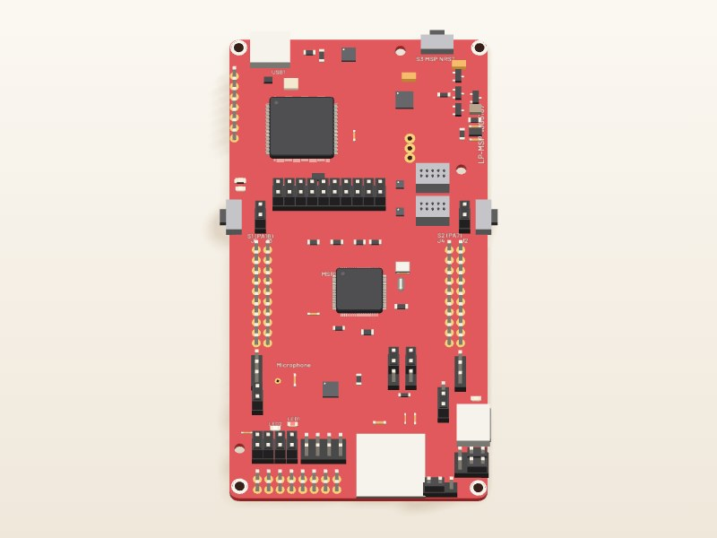
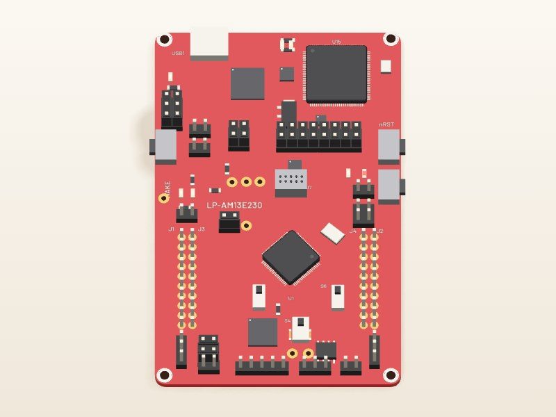
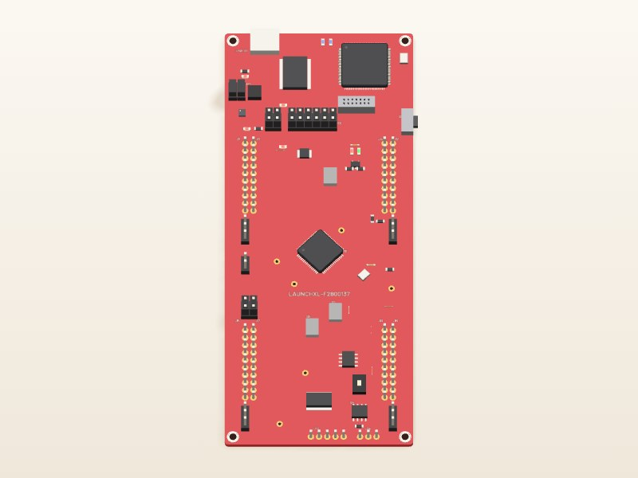
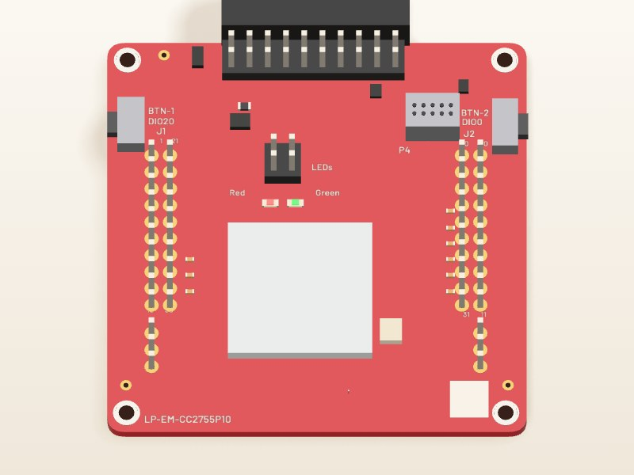

Fox Red Labs / Builds / Tools and languages
Blink an LED, then change the pattern
Plug in a LaunchPad, build TI's blink example, flash it and watch the LED. Then change the pattern by editing one number.
EasyNo wiring3 min to blink, tools installed
What you need

LP-MSPM0L1306 Micro-USB data cablepower and programming
Micro-USB data cablepower and programmingSoftware, free with a myTI login: CCStudio 21.0.1, MSPM0 SDK 2.11.00.07, xPack OpenOCD 0.12.0-7, SysConfig 1.26.3.

LP-MSPM0C1104Micro-USB data cablepower and programmingSoftware, free with a myTI login: CCStudio 21.0.1, MSPM0 SDK 2.11.00.07, xPack OpenOCD 0.12.0-7, SysConfig 1.26.3.
 LP-MSPM0G3507Micro-USB data cablepower and programming
LP-MSPM0G3507Micro-USB data cablepower and programmingSoftware, free with a myTI login: CCStudio 21.0.1, MSPM0 SDK 2.11.00.07.

Software, free with a myTI login: MSPM0 SDK 2.11.00.07, TI Arm Clang 5.1.1.LTS, SysConfig 1.26.3, xPack OpenOCD 0.12.0-7.

LP-MSPM0G5187USB data cablepower and programmingSoftware, free with a myTI login: MSPM0 SDK 2.11.00.07, TI Arm Clang 5.1.1.LTS, SysConfig 1.28.0, xPack OpenOCD 0.12.0-7.
 LP-MSPM33C321AUSB data cablepower and programming
LP-MSPM33C321AUSB data cablepower and programmingSoftware, free with a myTI login: MSPM33 SDK 1.04.00.00, TI Arm Clang 5.1.1.LTS, SysConfig 1.28.0, TI OpenOCD (CCSTUDIO-OPENOCD) 1.5.0.

LP-AM13E230USB data cablepower and programmingSoftware, free with a myTI login: AM13E2x SDK 26.01.00.03, TI Arm Clang 5.1.1.LTS, SysConfig 1.28.0, TI OpenOCD (CCSTUDIO-OPENOCD) 1.5.0.

LAUNCHXL-F2800137USB data cablepower and programmingSoftware, free with a myTI login: C2000Ware 26.02.00.00, TI C2000 compiler 25.11.1.LTS, SysConfig 1.28.1, CCStudio 21.0.1.
 LP-EM-CC2340R5
LP-EM-CC2340R5
LP-EM-CC2755P10 LP-XDS110ET debuggerdebug probeUSB data cablepower and programming
LP-XDS110ET debuggerdebug probeUSB data cablepower and programmingSoftware, free with a myTI login: SimpleLink Low Power F3 SDK 9.21.00.36, TI Arm Clang 5.1.1.LTS, SysConfig 1.28.0, TI OpenOCD (CCSTUDIO-OPENOCD) 1.5.0, DSLite (in CCStudio or UniFlash) 21.0.0.4166.
Software, free with a myTI login: SimpleLink CC13xx CC26xx SDK 8.33.00.16, TI Arm Clang 5.1.1.LTS, SysConfig 1.28.0, CCStudio 21.0.1.
What happens inside the chip
Blink an LED
Wiring. Nothing to wire. LED1 is on the board.
Tap a block or a step to follow one job.
The steps
Steps
Set up your computer once: 1 step. Done already? Start at step 2.
Install the tools once, all free: CCStudio 21.0.1 from TI's CCStudio download page (1.9 GB download, 8.1 GB installed, free myTI login) (it brings TI Arm Clang 5.1.1), the MSPM0 SDK 2.11.00.07 from TI's MSPM0 SDK download page (0.4 GB download, 2.2 GB installed), and xPack OpenOCD 0.12.0-7 from its GitHub release page (2 MB; the file xpack-openocd-0.12.0-7-darwin-x64.tar.gz on an Intel Mac, xpack-openocd-0.12.0-7-darwin-arm64.tar.gz on Apple Silicon).TERMINAL
The helper script
sdkmake.shin this repository expects the SDK at/Applications/ti/mspm0_sdk_2_11_00_07, SysConfig 1.26.3 at/Applications/ti/sysconfig_1.26.3and the compiler under/Applications/ti/ccs2101. SysConfig 1.26.3, the version this repo's scripts point at, came with the SimpleLink Wi-Fi SDK installer (10.20.00.39, which you do not need otherwise; you can get SysConfig alone from TI's SysConfig page, 0.96 GB installed) on the test Mac (it put it in/Applications/ti/sysconfig_1.26.3); CCStudio 21.0.1 carries its own 1.28.1, which this repo's scripts do not point at.You should see:
/Applications/ti/ccs2101/ccs/tools/compiler/ti-cgt-armllvm_5.1.1.LTS/bin/tiarmclang --versionprints 5.1.1, andopenocd --versionprints 0.12.0.
Plug the board into the Mac with a micro-USB data cable.BENCH
The board shows up as an XDS110 probe with two serial ports; there is no driver to install. Read your probe's serial number with
ls /dev/cu.usbmodem*(the text afterusbmodem, minus the last digit), or with/Applications/ti/ccs2101/ccs/ccs_base/common/uscif/xds110/xdsdfu -efrom CCStudio.You should see: The Mac lists the probe and two serial ports. A new board shows TI's out-of-box demo.
From the root of this repository, run the whole route with your probe's serial number.TERMINAL
It backs the board up, copies TI's blink example, builds it, flashes it and times the LED pin through the debugger. It took 13 to 14 s on this bench with the tools installed. Leave off
--probeonly if one probe is plugged in; with several, it stops with FRL-E002.Replace <serial> before you run this.
./start.sh mspm0l1306 blink --probe <serial>You should see: The run ends with a line that starts
OK:and the RGB LED on the board cycles.Or do it by hand, from the mspm0l1306 folder of this repository.TERMINAL
Copy TI's example out of the SDK, build it (3.3 s), then flash it with OpenOCD (0.6 s). The repository's
tools/ocd.shpicks the probe by serial number and refuses to run if it is missing.Replace <repository folder> and <serial> before you run this.
cd <repository folder>/mspm0l1306 cp -R /Applications/ti/mspm0_sdk_2_11_00_07/examples/nortos/LP_MSPM0L1306/driverlib/gpio_toggle_output . ../mspm0g3507/mcu-bench/sdk-common/sdkmake.sh gpio_toggle_output/ticlang PROBE=<serial> tools/ocd.sh "reset halt" "program gpio_toggle_output/ticlang/gpio_toggle_output.out verify" "reset run"You should see: OpenOCD ends with
** Verified OK **, and the RGB LED cycles.
Set up your computer once: 1 step. Done already? Start at step 2.
Install the tools once, all free: CCStudio 21.0.1 from TI's CCStudio download page (1.9 GB download, 8.1 GB installed, free myTI login) (it brings TI Arm Clang 5.1.1), the MSPM0 SDK 2.11.00.07 from TI's MSPM0 SDK download page (0.4 GB download, 2.2 GB installed), and xPack OpenOCD 0.12.0-7 from its GitHub release page (2 MB; the file xpack-openocd-0.12.0-7-darwin-x64.tar.gz on an Intel Mac, xpack-openocd-0.12.0-7-darwin-arm64.tar.gz on Apple Silicon).TERMINAL
The helper script
sdkmake.shin this repository expects the SDK at/Applications/ti/mspm0_sdk_2_11_00_07, SysConfig 1.26.3 at/Applications/ti/sysconfig_1.26.3and the compiler under/Applications/ti/ccs2101. SysConfig 1.26.3, the version this repo's scripts point at, came with the SimpleLink Wi-Fi SDK installer (10.20.00.39, which you do not need otherwise; you can get SysConfig alone from TI's SysConfig page, 0.96 GB installed) on the test Mac (it put it in/Applications/ti/sysconfig_1.26.3); CCStudio 21.0.1 carries its own 1.28.1, which this repo's scripts do not point at.You should see:
/Applications/ti/ccs2101/ccs/tools/compiler/ti-cgt-armllvm_5.1.1.LTS/bin/tiarmclang --versionprints 5.1.1, andopenocd --versionprints 0.12.0.
Plug the board into the Mac with a micro-USB data cable.BENCH
The board shows up as an XDS110 probe with two serial ports; there is no driver to install. Read your probe's serial number with
ls /dev/cu.usbmodem*(the text afterusbmodem, minus the last digit), or with/Applications/ti/ccs2101/ccs/ccs_base/common/uscif/xds110/xdsdfu -efrom CCStudio.You should see: The Mac lists the probe and two serial ports. The MSPM0 C1104 shows its red LED on or blinking before you flash anything.
Copy TI's example out of the SDK and build it, from the mspm0c1104 folder of this repository.TERMINAL
The build took 3.5 s.
Replace <repository folder> before you run this.
cd <repository folder>/mspm0c1104 cp -R /Applications/ti/mspm0_sdk_2_11_00_07/examples/nortos/LP_MSPM0C1104/driverlib/gpio_toggle_output . ../mspm0g3507/mcu-bench/sdk-common/sdkmake.sh gpio_toggle_output/ticlangYou should see: A build with no errors that leaves
gpio_toggle_output/ticlang/gpio_toggle_output.out.Flash it with OpenOCD.TERMINAL
Replace
<serial>with your probe's (0.64 s at a 2.5 MHz adapter speed).Replace <serial> before you run this.
openocd -f interface/xds110.cfg -c "adapter serial <serial>" -f target/ti_mspm0.cfg -c init -c "reset halt" -c "program gpio_toggle_output/ticlang/gpio_toggle_output.out verify" -c "reset run" -c shutdownYou should see: OpenOCD ends with
** Verified OK **, and the red LED blinks.
Set up your computer once: 6 steps. Done already? Start at step 7.
Check you have at least 12 GB free (Apple menu, System Settings, General, Storage).MAC
Make a free myTI account on ti.com if you do not have one. Delete each installer file once it has finished installing.
You should see: At least 12 GB free. CCStudio and the SDK take 10.3 GB once installed.
Download CCStudio 21.0.1 for macOS from TI's CCStudio download page (1.9 GB) and install it.BROWSER
It goes to
/Applications/ti/ccs2101. Open it once when the installer finishes, then delete the installer file.You should see: CCStudio opens to its start page. About 19 minutes in all on the test Mac, 7 of them your time.
Open TI's MSPM0 SDK download page (0.4 GB download, 2.2 GB installed) and download the macOS file, mspm0_sdk_2_11_00_07.app.zip (0.4 GB).BROWSER
On that page it is the macOS
.app.zipentry for version 2.11.00.07.You should see: The zip lands in your downloads folder after about 3 minutes.
Unzip the file, open the installer and click through it.INSTALLER
It installs to
/Applications/ti/mspm0_sdk_2_11_00_07(2.2 GB). Then delete the zip and the installer.You should see: The folder
/Applications/ti/mspm0_sdk_2_11_00_07exists. 1 minute of clicks and 2 min 48 s of waiting on the test Mac.Choose Help, Get Started with AI.CCSTUDIO
Set Agent to Claude Code and tick Enable. Provider: Anthropic. Scope: pick Workspace. Leave Auth Token and Base URL blank, tick "Enable CCStudio IDE ecosystem MCP servers for Claude Code", click Apply, and log in to Claude in the chat panel if it asks. Keep CCStudio open from here on: its build and flash servers only run while it is open.
You should see: The chat panel answers, and all four of CCStudio's tool servers (project, debug, SysConfig, serial) respond.
Install Claude Code if you do not have it (curl -fsSL https://claude.ai/install.sh | bash, then claude once to log in).TERMINAL
Save the file below as
ccs-mcp.jsonin the folder you will work in, and start Claude Code withclaude --mcp-config ccs-mcp.json. In VS Code, open that folder and start Claude Code from its panel the same way.{"mcpServers": { "ccs-project": {"command": "/usr/bin/env", "args": ["-u", "ELECTRON_RUN_AS_NODE", "/Applications/ti/ccs2101/ccs/tools/node/node", "/Applications/ti/ccs2101/ccs/Code Composer Studio.app/Contents/Resources/app/plugins/ccs-ai/extension/dist/mcp-server-proxy.js", "project"]}, "ccs-debug": {"command": "/usr/bin/env", "args": ["-u", "ELECTRON_RUN_AS_NODE", "/Applications/ti/ccs2101/ccs/tools/node/node", "/Applications/ti/ccs2101/ccs/Code Composer Studio.app/Contents/Resources/app/plugins/ccs-ai/extension/dist/mcp-server-proxy.js", "debug"]}, "ccs-sysconfig": {"command": "/usr/bin/env", "args": ["-u", "ELECTRON_RUN_AS_NODE", "/Applications/ti/ccs2101/ccs/tools/node/node", "/Applications/ti/ccs2101/ccs/Code Composer Studio.app/Contents/Resources/app/plugins/ccs-ai/extension/dist/mcp-server-proxy.js", "sysconfig"]}, "ccs-serial": {"command": "/usr/bin/env", "args": ["-u", "ELECTRON_RUN_AS_NODE", "/Applications/ti/ccs2101/ccs/tools/node/node", "/Applications/ti/ccs2101/ccs/Code Composer Studio.app/Contents/Resources/app/plugins/ccs-ai/extension/dist/mcp-server-proxy.js", "serial"]} }}You should see: Claude Code starts with the four servers ccs-project, ccs-debug, ccs-sysconfig and ccs-serial registered. Saving this file and starting Claude Code by hand, as written here, has not been timed on a fresh Mac.
Plug the board into the Mac with the USB cable, at the micro-USB port on the debugger end of the board.BENCH
There is no driver to install.
You should see: The Mac sees a debug probe and two serial ports;
/Applications/ti/ccs2101/ccs/ccs_base/common/uscif/xds110/xdsdfu -elists the probe. A board that was used before may already be blinking its old program.Type the line below.TERMINAL
Claude Code imports TI's example through CCStudio, cuts the delay, builds it, flashes it and starts it. Look at the RGB LED. If Claude Code asks permission to use a
ccs-projectorccs-debugtool, say yes; it asks once per tool.I plugged in an LP-MSPM0G3507 and CCStudio is open. Import TI's gpio_toggle_output example for LP_MSPM0G3507, make the blink 5 times faster, then build it, flash it and run it.You should see: The RGB LED blinks about five times a second. The delay went from 0.5 s to 0.1 s (the constant 16000000 to 3200000).
Where a TI MSPM0 SDK example ships a gcc makefile, GCC builds it as well as TI Arm Clang does. All 224 no-RTOS DriverLib examples that ship one built unchanged for the MSPM0 G3507 and MSPM0 L1306, and 87 of 87 ran on the L1306 with no fault.
Details
GCC 12.2 from the Zephyr SDK ran through three small wrapper scripts named arm-none-eabi-*; TI names Arm GNU 9-2019-q4. GCC code was a median 15 percent larger. Copy the SDK's example folder somewhere first, go into its gcc folder, and put the folder of a GCC install (the one that holds bin/arm-none-eabi-gcc) in place of <GCC folder>. Details: portability/toolchains/gcc-mspm0/README.md.
Replace <GCC folder> before you run this.
make MSPM0_SDK_INSTALL_DIR=/Applications/ti/mspm0_sdk_2_11_00_07 SYSCONFIG_TOOL=/Applications/ti/sysconfig_1.26.3/sysconfig_cli.sh GCC_ARMCOMPILER=<GCC folder>This is one command from the recorded notes, not a complete run: copy the SDK example folder out first and go into its gcc folder.
Set up your computer once: 1 step. Done already? Start at step 2.
Install the tools once, all free: MSPM0 SDK 2.11.00.07, TI Arm Clang 5.1.1.LTS, SysConfig 1.26.3, xPack OpenOCD 0.12.0-7.TERMINAL
The tools come to about 0.9 GB to download and 5 GB on disk; only the MSPM0 SDK asks for a myTI login. No CCStudio window is needed.
python3 tools/frl/frl.py doctor --board <board id>lists anything missing, with links. If your tools live elsewhere,tools/frl/toolenv.pyreads theFRL_variables from the start page.You should see:
python3 tools/frl/frl.py doctor --board <board id>ends with every tool found.
Plug the board into the Mac with a data cable.BENCH
The board shows up as an XDS110 probe with two serial ports; there is no driver to install. Read your probe's serial number with
ls /dev/cu.usbmodem*(the text afterusbmodem, minus the last digit), or with/Applications/ti/ccs2101/ccs/ccs_base/common/uscif/xds110/xdsdfu -efrom CCStudio.You should see: The Mac lists the probe and two serial ports.
From the root of this repository, run the line for your board with your probe's serial number.TERMINAL
It backs the board up, copies TI's example (examples/nortos/<board>/driverlib/gpio_toggle_output), builds it, flashes it and checks the LED. Leave off
--probeonly if one probe is plugged in; with several, it stops with FRL-E002.Replace <serial> before you run this.
./start.sh mspm0g3519 blink --probe <serial> ./start.sh mspm0c1104 blink --probe <serial>You should see: The run ends with a line that starts
OK:and the LED on the board blinks. LED checked: MSPM0 G3519: LED2 red (PB26); MSPM0 C1104: LED1 red (PA22).
Set up your computer once: 1 step. Done already? Start at step 2.
Install the tools once, all free: MSPM0 SDK 2.11.00.07, TI Arm Clang 5.1.1.LTS, SysConfig 1.28.0, xPack OpenOCD 0.12.0-7.TERMINAL
The tools come to about 0.9 GB to download and 5 GB on disk; only the MSPM0 SDK asks for a myTI login. No CCStudio window is needed.
python3 tools/frl/frl.py doctor --board <board id>lists anything missing, with links. If your tools live elsewhere,tools/frl/toolenv.pyreads theFRL_variables from the start page.You should see:
python3 tools/frl/frl.py doctor --board <board id>ends with every tool found.
Plug the board into the Mac with a data cable.BENCH
The board shows up as an XDS110 probe with two serial ports; there is no driver to install. Read your probe's serial number with
ls /dev/cu.usbmodem*(the text afterusbmodem, minus the last digit), or with/Applications/ti/ccs2101/ccs/ccs_base/common/uscif/xds110/xdsdfu -efrom CCStudio.You should see: The Mac lists the probe and two serial ports.
From the root of this repository, run the command with your probe's serial number.TERMINAL
It backs the board up, copies TI's example (examples/nortos/LP_MSPM0G5187/driverlib/gpio_toggle_output), builds it, flashes it and checks the LED. Leave off
--probeonly if one probe is plugged in; with several, it stops with FRL-E002.Replace <serial> before you run this.
./start.sh mspm0g5187 blink --probe <serial>You should see: The run ends with a line that starts
OK:and the LED on the board blinks. LED checked: MSPM0 G5187: LED2 red (PA17).
Set up your computer once: 1 step. Done already? Start at step 2.
Install the tools once, all free: MSPM33 SDK 1.04.00.00, TI Arm Clang 5.1.1.LTS, SysConfig 1.28.0, TI OpenOCD (CCSTUDIO-OPENOCD) 1.5.0.TERMINAL
The tool sizes for this family were not all recorded; the doctor command lists what is missing.
python3 tools/frl/frl.py doctor --board <board id>lists anything missing, with links. If your tools live elsewhere,tools/frl/toolenv.pyreads theFRL_variables from the start page.You should see:
python3 tools/frl/frl.py doctor --board <board id>ends with every tool found.
Plug the board into the Mac with a data cable.BENCH
The board shows up as an XDS110 probe with two serial ports; there is no driver to install. Read your probe's serial number with
ls /dev/cu.usbmodem*(the text afterusbmodem, minus the last digit), or with/Applications/ti/ccs2101/ccs/ccs_base/common/uscif/xds110/xdsdfu -efrom CCStudio.You should see: The Mac lists the probe and two serial ports.
From the root of this repository, run the command with your probe's serial number.TERMINAL
It backs the board up, copies TI's example (examples/nortos/LP_MSPM33C321A/driverlib/gpio_toggle_output), builds it, flashes it and checks the LED. Leave off
--probeonly if one probe is plugged in; with several, it stops with FRL-E002.Replace <serial> before you run this.
./start.sh mspm33c321a blink --probe <serial>You should see: The run ends with a line that starts
OK:and the LED on the board blinks. LED checked: MSPM33 C321A: LED2 red (PC26).
Set up your computer once: 1 step. Done already? Start at step 2.
Install the tools once, all free: AM13E2x SDK 26.01.00.03, TI Arm Clang 5.1.1.LTS, SysConfig 1.28.0, TI OpenOCD (CCSTUDIO-OPENOCD) 1.5.0.TERMINAL
The tool sizes for this family were not all recorded; the doctor command lists what is missing.
python3 tools/frl/frl.py doctor --board <board id>lists anything missing, with links. If your tools live elsewhere,tools/frl/toolenv.pyreads theFRL_variables from the start page.You should see:
python3 tools/frl/frl.py doctor --board <board id>ends with every tool found.
Plug the board into the Mac with a data cable.BENCH
The board shows up as an XDS110 probe with two serial ports; there is no driver to install. Read your probe's serial number with
ls /dev/cu.usbmodem*(the text afterusbmodem, minus the last digit), or with/Applications/ti/ccs2101/ccs/ccs_base/common/uscif/xds110/xdsdfu -efrom CCStudio.You should see: The Mac lists the probe and two serial ports.
From the root of this repository, run the command with your probe's serial number.TERMINAL
It backs the board up, copies TI's example (examples/driverlib/gpio/gpio_toggle_output), builds it, flashes it and checks the LED. Leave off
--probeonly if one probe is plugged in; with several, it stops with FRL-E002.Replace <serial> before you run this.
./start.sh am13e230 blink --probe <serial>You should see: The run ends with a line that starts
OK:and the LED on the board blinks. LED checked: AM13E230: LED4 red (PA5).
Set up your computer once: 1 step. Done already? Start at step 2.
Install the tools once, all free: C2000Ware 26.02.00.00, TI C2000 compiler 25.11.1.LTS, SysConfig 1.28.1, CCStudio 21.0.1.TERMINAL
OpenOCD has no C28x support, so this route needs CCStudio installed for its scripting; the doctor command lists what is missing.
python3 tools/frl/frl.py doctor --board <board id>lists anything missing, with links. If your tools live elsewhere,tools/frl/toolenv.pyreads theFRL_variables from the start page.You should see:
python3 tools/frl/frl.py doctor --board <board id>ends with every tool found.
Plug the board into the Mac with a USB data cable.BENCH
Its onboard XDS110 probe shows up with serial ports; there is no driver to install. Read the probe's serial number with
ls /dev/cu.usbmodem*or with/Applications/ti/ccs2101/ccs/ccs_base/common/uscif/xds110/xdsdfu -e.You should see: The Mac lists the probe and two serial ports.
From the root of this repository, run the command with your probe's serial number.TERMINAL
It backs the board up, copies TI's example (driverlib/f280013x/examples/led (led_ex1_blinky)), builds it, flashes it and checks the LED. Leave off
--probeonly if one probe is plugged in; with several, it stops with FRL-E002.Replace <serial> before you run this.
./start.sh f2800137 blink --probe <serial>You should see: The run ends with a line that starts
OK:and the LED on the board blinks. LED checked: LAUNCHXL-F2800137: LED4 red (GPIO20, active low).
Set up your computer once: 1 step. Done already? Start at step 2.
Install the tools once, all free: SimpleLink Low Power F3 SDK 9.21.00.36, TI Arm Clang 5.1.1.LTS, SysConfig 1.28.0, TI OpenOCD (CCSTUDIO-OPENOCD) 1.5.0, DSLite (in CCStudio or UniFlash) 21.0.0.4166.TERMINAL
The tool sizes for this family were not all recorded; the doctor command lists what is missing.
python3 tools/frl/frl.py doctor --board <board id>lists anything missing, with links. If your tools live elsewhere,tools/frl/toolenv.pyreads theFRL_variables from the start page.You should see:
python3 tools/frl/frl.py doctor --board <board id>ends with every tool found.
Connect the LP-XDS110ET probe to the LP-EM board and plug the probe into the Mac with a USB data cable.BENCH
The probe shows up as an XDS110 with serial ports; there is no driver to install. Read its serial number with
ls /dev/cu.usbmodem*or with/Applications/ti/ccs2101/ccs/ccs_base/common/uscif/xds110/xdsdfu -e.You should see: The Mac lists the probe and two serial ports.
From the root of this repository, run the line for your board with your probe's serial number.TERMINAL
It backs the board up, copies TI's example (examples/nortos/<board>/drivers/empty), builds it, flashes it and checks the LED. Leave off
--probeonly if one probe is plugged in; with several, it stops with FRL-E002.Replace <serial> before you run this.
./start.sh cc2340r5 blink --probe <serial> ./start.sh cc2755p10 blink --probe <serial>You should see: The run ends with a line that starts
OK:and the LED on the board blinks. LED checked: CC2340R5: LED0 red (DIO14); CC2755P10: LED0 red (DIO16).
Set up your computer once: 1 step. Done already? Start at step 2.
Install the tools once, all free: SimpleLink CC13xx CC26xx SDK 8.33.00.16, TI Arm Clang 5.1.1.LTS, SysConfig 1.28.0, CCStudio 21.0.1.TERMINAL
The SDK from TI's GitHub has no examples folder, so the route builds the project in
tools/frl/examples/cc1354p10-blink; setFRL_F2_SDKto the SDK folder.python3 tools/frl/frl.py doctor --board <board id>lists anything missing, with links. If your tools live elsewhere,tools/frl/toolenv.pyreads theFRL_variables from the start page.You should see:
python3 tools/frl/frl.py doctor --board <board id>ends with every tool found.
Connect an external LP-XDS110 probe to the LaunchPad and plug the probe into the Mac with a USB data cable.BENCH
Read its serial number with
ls /dev/cu.usbmodem*or with/Applications/ti/ccs2101/ccs/ccs_base/common/uscif/xds110/xdsdfu -e.You should see: The Mac lists the probe and two serial ports.
From the root of this repository, run the command with your probe's serial number.TERMINAL
It backs the board up, copies TI's example (tools/frl/examples/cc1354p10-blink (the shape of TI's drivers/empty)), builds it, flashes it and checks the LED. Leave off
--probeonly if one probe is plugged in; with several, it stops with FRL-E002.Replace <serial> before you run this.
./start.sh cc1354p10 blink --probe <serial>You should see: The run ends with a line that starts
OK:and the LED on the board blinks. LED checked: CC1354P10-1: red LED (DIO6).
Make it yours
By hand
Ask for a different pattern: run the same command with --pattern and four times in milliseconds (on, off, on, pause).
Replace <serial> before you run this.
./start.sh mspm0l1306 blink --probe <serial> --pattern 150,150,150,900You should see: The run ends with OK: and says LED2 red (PA26) repeats the pattern you asked for.
By hand
Change the delay in gpio_toggle_output.c, then rebuild and flash again with the two commands above. The run changed the delay constant from 12,000,000 to 3,000,000.
You should see: The blink rate changes. On the C1104 the proof was reading the LED pin: the toggle period went from 496 ms to 124 ms. A person did not watch it.
With an AI assistant
You should see: The LED shows blue, then red, then green, two seconds each. You check the LED; the AI cannot.
By hand
Open gpio_toggle_output.c and change the delay constant (16000000 on this board) to 3200000, then build and flash again.
You should see: The LED blinks five times faster.
By hand
Ask for a different pattern: run the same command with --pattern and four or more times in milliseconds (on, off, on, pause).
Replace <serial> before you run this.
./start.sh mspm0g3519 blink --probe <serial> --pattern 150,150,150,900
./start.sh mspm0c1104 blink --probe <serial> --pattern 150,150,150,900You should see: The run ends with OK: and says the LED repeats the pattern you asked for.
By hand
Ask for a different pattern: run the same command with --pattern and four or more times in milliseconds (on, off, on, pause).
Replace <serial> before you run this.
./start.sh mspm0g5187 blink --probe <serial> --pattern 150,150,150,900You should see: The run ends with OK: and says LED2 red (PA17) repeats the pattern you asked for.
By hand
Ask for a different pattern: run the same command with --pattern and four or more times in milliseconds (on, off, on, pause).
Replace <serial> before you run this.
./start.sh mspm33c321a blink --probe <serial> --pattern 150,150,150,900You should see: The run ends with OK: and says LED2 red (PC26) repeats the pattern you asked for.
By hand
Ask for a different pattern: run the same command with --pattern and four or more times in milliseconds (on, off, on, pause).
Replace <serial> before you run this.
./start.sh am13e230 blink --probe <serial> --pattern 150,150,150,900You should see: The run ends with OK: and says LED4 red (PA5) repeats the pattern you asked for.
By hand
Ask for a different pattern: run the same command with --pattern and four or more times in milliseconds (on, off, on, pause).
Replace <serial> before you run this.
./start.sh f2800137 blink --probe <serial> --pattern 150,150,150,900You should see: The run ends with OK: and says LED4 red (GPIO20, active low) repeats the pattern you asked for, within two sample periods (48 ms).
By hand
Ask for a different pattern: run the same command with --pattern and four or more times in milliseconds (on, off, on, pause).
Replace <serial> before you run this.
./start.sh cc2340r5 blink --probe <serial> --pattern 150,150,150,900
./start.sh cc2755p10 blink --probe <serial> --pattern 150,150,150,900You should see: The run ends with OK: and says the LED pin (DIO14 on the CC2340R5, DIO16 on the CC2755P10) was seen on and off.
By hand
Ask for a different pattern: run the same command with --pattern and four or more times in milliseconds (on, off, on, pause).
Replace <serial> before you run this.
./start.sh cc1354p10 blink --probe <serial> --pattern 150,150,150,900You should see: The run ends with OK: and says the red LED (DIO6) repeats the pattern you asked for, read from the program's own millisecond log.
What to build next

If something goes wrong
| Your tools live elsewhere | Set FRL_MSPM0_SDK, FRL_SYSCONFIG and FRL_TICLANG to where they are; sdkmake.sh reads them through tools/frl/toolenv.py. |
| Nothing appears | Try another cable; a charge-only cable looks the same. |
| It stops with FRL-E002 | Several probes are plugged in: name yours with --probe. python3 tools/frl/frl.py detect lists them. |
| OpenOCD prints `Error | Checksum mismatch - attempting binary compare` first; that is normal, and the next line is the real result. |
| The check fails | Read the line it prints; the check decides the result, not the LED you see. |
Every fix for this board: the FAQ.
| Your tools live elsewhere | Set FRL_MSPM0_SDK, FRL_SYSCONFIG and FRL_TICLANG to where they are; sdkmake.sh reads them through tools/frl/toolenv.py. |
| Nothing appears | Try another cable; a charge-only cable looks the same. |
| On an MSPM0 C1104 board older than version E3 the LED does not blink | The red LED moved from PA4 to PA22, and TI's example toggles PA22. Check the version printed on the board (and that jumper J7 is on). |
| OpenOCD prints `Error | Checksum mismatch - attempting binary compare` first; that is normal, and the next line is the real result. |
| The rate does not change | Check the build finished with no errors before flashing; the old image keeps running. |
Every fix for this board: the FAQ.
| The Mac runs short during the CCStudio install | The installer file is probably still on disk; delete it. |
| TI shows a short export approval form before the download | Fill it in (about a minute). |
| CCStudio quits without a window on first launch | Open it yourself from Applications. |
| Nothing seems to download | Look in your browser's downloads. The SDK downloads in the browser, not inside CCStudio. |
| CCStudio lists no SDK afterwards | Quit CCStudio and open it again. |
More troubleshooting
| Several chat panels open | Close the extras; one is enough. Scope starts on Global; Workspace keeps the change out of every other Claude Code session on your Mac. |
| Claude Code says a server timed out | Check CCStudio is open with a workspace and that step 5's Apply was pressed. |
CCStudio is not in /Applications/ti/ccs2101 | Change that path in all four lines. |
| The Mac sees nothing | Try another micro-USB cable: a charge-only cable looks the same. A USB-C-only Mac needs an adapter. |
| The board blinked before you typed anything | That was a program already on it; this step replaces it, so a faster blink is your proof. |
| The colors are wrong | Say what you see in plain words and ask again. The AI edits the same file and flashes again. |
Every fix for this board: the FAQ.
| A tool is missing | The doctor command names it and prints its download link. |
| Nothing appears | Try another cable; a charge-only cable looks the same. |
| It stops with FRL-E002 | Several probes are plugged in: name yours with --probe. On the MSPM0 C1104, jumper J7 must be on or the red LED stays dark, and the route never mass-erases that chip. |
| The check fails | Read the line it prints; the check decides the result, not the LED you see. |
Every fix for this board: the FAQ.
| A tool is missing | The doctor command names it and prints its download link. |
| Nothing appears | Try another cable; a charge-only cable looks the same. |
| It stops with FRL-E002 | Several probes are plugged in: name yours with --probe. On the MSPM0 G5187, jumper J12 [2:1] must be on for LED2 red. |
| The check fails | Read the line it prints; the check decides the result, not the LED you see. |
Every fix for this board: the FAQ.
| A tool is missing | The doctor command names it and prints its download link. |
| Nothing appears | Try another cable; a charge-only cable looks the same. |
| It stops with FRL-E002 | Several probes are plugged in: name yours with --probe. xPack OpenOCD 0.12.0-7 has no MSPM33 flash driver; the route needs TI's OpenOCD, unpacked to ~/ti/ti-openocd or named with FRL_TI_OPENOCD. |
| The check fails | Read the line it prints; the check decides the result, not the LED you see. |
Every fix for this board: the FAQ.
| A tool is missing | The doctor command names it and prints its download link. |
| Nothing appears | Try another cable; a charge-only cable looks the same. |
| It stops with FRL-E002 | Several probes are plugged in: name yours with --probe. The route needs TI's OpenOCD, unpacked to ~/ti/ti-openocd or named with FRL_TI_OPENOCD. |
| The check fails | Read the line it prints; the check decides the result, not the LED you see. |
Every fix for this board: the FAQ.
| A tool is missing | The doctor command names it and prints its download link. |
| Nothing appears | Try another cable; a charge-only cable looks the same. |
| It stops with FRL-E002 | Several probes are plugged in: name yours with --probe. |
| It stops with FRL-E042 | CCStudio read the pin too rarely because other boards were writing at the same time; check one board at a time. |
| The check fails | Read the line it prints; the check decides the result, not the LED you see. |
Every fix for this board: the FAQ.
| A tool is missing | The doctor command names it and prints its download link. |
| Nothing appears | Try another cable and reseat the probe on the board's debug header; a half-seated probe cost one bench run 8 minutes. |
| It stops with FRL-E002 | Several probes are plugged in: name yours with --probe. Every write erases the whole chip, CCFG included, because TI's tools have no smaller erase for these parts; frl says so before writing and the restore writes the backup back. |
| The check fails | Read the line it prints; the check decides the result, not the LED you see. |
Every fix for this board: the FAQ.
| A tool is missing | The doctor command names it and prints its download link. |
| Nothing appears | Try another cable and reseat the probe. |
| It stops with FRL-E002 | Several probes are plugged in: name yours with --probe. This chip can refuse a second debugger connect (error -242), which is why every step runs through CCStudio's Python script instead of DSLite. |
| The check fails | Read the line it prints; the check decides the result, not the LED you see. |
Every fix for this board: the FAQ.
Get the code
Plug in the board and paste this in a terminal.
git clone --depth 1 --filter=blob:none https://github.com/Fox-Red-Labs/fox-red-labs.git && cd fox-red-labs
./start.sh mspm0l1306 blinkgit clone --depth 1 --filter=blob:none https://github.com/Fox-Red-Labs/fox-red-labs.git && cd fox-red-labs
py start.py mspm0l1306 blinkNot Claude Code? Copy this prompt instead.
Plug in the board and paste this in a terminal.
git clone --depth 1 --filter=blob:none https://github.com/Fox-Red-Labs/fox-red-labs.git && cd fox-red-labs
./start.sh mspm0c1104 blinkgit clone --depth 1 --filter=blob:none https://github.com/Fox-Red-Labs/fox-red-labs.git && cd fox-red-labs
py start.py mspm0c1104 blinkNot Claude Code? Copy this prompt instead.
Plug in the board and paste this in a terminal.
git clone --depth 1 --filter=blob:none https://github.com/Fox-Red-Labs/fox-red-labs.git && cd fox-red-labs
./start.sh mspm0g3507 blinkgit clone --depth 1 --filter=blob:none https://github.com/Fox-Red-Labs/fox-red-labs.git && cd fox-red-labs
py start.py mspm0g3507 blinkNot Claude Code? Copy this prompt instead.
Plug in the board and paste this in a terminal.
git clone --depth 1 --filter=blob:none https://github.com/Fox-Red-Labs/fox-red-labs.git && cd fox-red-labs
./start.sh mspm0g3519 blinkgit clone --depth 1 --filter=blob:none https://github.com/Fox-Red-Labs/fox-red-labs.git && cd fox-red-labs
py start.py mspm0g3519 blinkNot Claude Code? Copy this prompt instead.
Plug in the board and paste this in a terminal.
git clone --depth 1 --filter=blob:none https://github.com/Fox-Red-Labs/fox-red-labs.git && cd fox-red-labs
./start.sh mspm0g5187 blinkgit clone --depth 1 --filter=blob:none https://github.com/Fox-Red-Labs/fox-red-labs.git && cd fox-red-labs
py start.py mspm0g5187 blinkNot Claude Code? Copy this prompt instead.
Plug in the board and paste this in a terminal.
git clone --depth 1 --filter=blob:none https://github.com/Fox-Red-Labs/fox-red-labs.git && cd fox-red-labs
./start.sh mspm33c321a blinkgit clone --depth 1 --filter=blob:none https://github.com/Fox-Red-Labs/fox-red-labs.git && cd fox-red-labs
py start.py mspm33c321a blinkNot Claude Code? Copy this prompt instead.
Plug in the board and paste this in a terminal.
git clone --depth 1 --filter=blob:none https://github.com/Fox-Red-Labs/fox-red-labs.git && cd fox-red-labs
./start.sh am13e230 blinkgit clone --depth 1 --filter=blob:none https://github.com/Fox-Red-Labs/fox-red-labs.git && cd fox-red-labs
py start.py am13e230 blinkNot Claude Code? Copy this prompt instead.
Plug in the board and paste this in a terminal.
git clone --depth 1 --filter=blob:none https://github.com/Fox-Red-Labs/fox-red-labs.git && cd fox-red-labs
./start.sh f2800137 blinkgit clone --depth 1 --filter=blob:none https://github.com/Fox-Red-Labs/fox-red-labs.git && cd fox-red-labs
py start.py f2800137 blinkNot Claude Code? Copy this prompt instead.
Plug in the board and paste this in a terminal.
git clone --depth 1 --filter=blob:none https://github.com/Fox-Red-Labs/fox-red-labs.git && cd fox-red-labs
./start.sh cc2340r5 blinkgit clone --depth 1 --filter=blob:none https://github.com/Fox-Red-Labs/fox-red-labs.git && cd fox-red-labs
py start.py cc2340r5 blinkNot Claude Code? Copy this prompt instead.
Plug in the board and paste this in a terminal.
git clone --depth 1 --filter=blob:none https://github.com/Fox-Red-Labs/fox-red-labs.git && cd fox-red-labs
./start.sh cc1354p10 blinkgit clone --depth 1 --filter=blob:none https://github.com/Fox-Red-Labs/fox-red-labs.git && cd fox-red-labs
py start.py cc1354p10 blinkNot Claude Code? Copy this prompt instead.
The code is in mspm0g3507/, with notes for your AI assistant in AGENTS.md.
Reports from others, and the report forms
Clone the repository and open the board's folder below. AGENTS.md is a plain text file of notes for AI coding assistants, and llms.txt at the root indexes the site for one.
git clone https://github.com/Fox-Red-Labs/fox-red-labs.git- LP-MSPM0G3507: folder
mspm0g3507/.- README: the board's lab notebook (what was run, in order)
- Notes for an AI coding assistant working in this repository: notes for an AI assistant; copy it into your own project if you use one
- FAQ: errors and fixes
The other 11 board folders
- LP-MSPM0L1306: folder
mspm0l1306/.- README: the board's lab notebook (what was run, in order)
- Notes for an AI coding assistant working in this repository: notes for an AI assistant; copy it into your own project if you use one
- FAQ: errors and fixes
- LP-EM-CC2340R5: folder
cc2340r5/.- README: the board's lab notebook (what was run, in order)
- Notes for an AI coding assistant working in this repository: notes for an AI assistant; copy it into your own project if you use one
- FAQ: errors and fixes
- LAUNCHXL-F2800137: folder
c2000-launchpad/.- README: the board's lab notebook (what was run, in order)
- Notes for an AI coding assistant working in this repository: notes for an AI assistant; copy it into your own project if you use one
- FAQ: errors and fixes
- LP-MSPM0C1104: folder
mspm0c1104/.- README: the board's lab notebook (what was run, in order)
- Notes for an AI coding assistant working in this repository: notes for an AI assistant; copy it into your own project if you use one
- FAQ: errors and fixes
- LP-MSPM0G3519: folder
mspm0g3519/.- README: the board's lab notebook (what was run, in order)
- Notes for an AI coding assistant working in this repository: notes for an AI assistant; copy it into your own project if you use one
- FAQ: errors and fixes
- LP-MSPM0L2228: folder
mspm0l2228/.- README: the board's lab notebook (what was run, in order)
- Notes for an AI coding assistant working in this repository: notes for an AI assistant; copy it into your own project if you use one
- FAQ: errors and fixes
- LP-MSPM0G5187: folder
mspm0g5187/.- README: the board's lab notebook (what was run, in order)
- Notes for an AI coding assistant working in this repository: notes for an AI assistant; copy it into your own project if you use one
- FAQ: errors and fixes
- LP-MSPM33C321A: folder
mspm33c321a/.- README: the board's lab notebook (what was run, in order)
- Notes for an AI coding assistant working in this repository: notes for an AI assistant; copy it into your own project if you use one
- FAQ: errors and fixes
- LP-AM13E230: folder
am13e230/.- README: the board's lab notebook (what was run, in order)
- Notes for an AI coding assistant working in this repository: notes for an AI assistant; copy it into your own project if you use one
- FAQ: errors and fixes
- LP-EM-CC2755P10: folder
cc2755p10/.- README: the board's lab notebook (what was run, in order)
- Notes for an AI coding assistant working in this repository: notes for an AI assistant; copy it into your own project if you use one
- FAQ: errors and fixes
- LP-CC1354P10-1: folder
cc1354p10/.- README: the board's lab notebook (what was run, in order)
- Notes for an AI coding assistant working in this repository: notes for an AI assistant; copy it into your own project if you use one
- FAQ: errors and fixes
- LP-MSPM0L1306: folder
Code is BSD-3-Clause, writing is CC BY 4.0; third-party folders keep their own licenses.
Built it? Tell us
Built this, or got stuck? Report it on GitHub with a few short answers. Your report shows here in your words, marked as yours. A failure that repeats on the bench gets its fix here.
Evidence and limitsBlinking in 2 min 29 s on the MSPM0 G3507; the blink runs on all 10 boards listed here. Results, sources, timing and limits.
From a terminal, no AI step, on the LP-MSPM0L1306
Expected result: The board's RGB LED blinks after a flash that takes about a second, and the one-command run ends with an OK line. Whole run 13 to 14 s with the tools installed.
What this shows
- TI's gpio_toggle_output example builds and flashes on the MSPM0 L1306 from one command, with no CCStudio window and no AI step.
- The check reads the LED pin through the debugger and passes the pattern you asked for.
What this does not establish, and limits
What this does not establish
- That an AI assistant can drive this route: no AI step was timed on this board for this route.
- A person's first-hour time: the 13 to 14 s is a scripted run with the tools already installed.
Limits to keep in mind
- The helper scripts look for the tools in the TI install folders; another place is named with the FRL_ variables the start page lists. Checked on one Mac.
- Checked on an Intel Mac on macOS 15.7 only.
- Nothing here ran through CCStudio on this board.
Sources
Versions, sizes and timing
| Whole route | 13 to 14 s from the command to a checked pattern, tools installed | first-use tool notes |
|---|---|---|
| Build and flash by hand | build 3.3 s, OpenOCD flash and verify 0.6 s; UniFlash's command line also works in 15.0 s | README notes |
| Tools | MSPM0 SDK 2.11.00.07, TI Arm Clang 5.1.1.LTS, SysConfig 1.26.3, xPack OpenOCD 0.12.0-7, Intel Mac on macOS 15.7 | README notes |
Evidence
- MSPM0 L1306: the one-command route ran on hardware on 2026-10-14 (Intel Mac, tools installed): back up, build, flash and check in 13 to 14 s. first-use tool notes
- MSPM0 L1306: TI's blink example built in 3.3 s and flashed in 0.6 s with OpenOCD, and the RGB LED cycled (2026-10-06). README notes
Other boards
- CC1354P10Should work Works on the LP-EM-CC2755P10
- MSPM0G3519, MSPM0G5187Should work Works on the LP-MSPM0G3507
- MSPM0G3507should work
- CC2340R5, F2800137, MSPM33C321A, AM13E230, CC2755P10, CC35X1, AM2434, MSPM0L2228ran another way
- MSPM0C1104not assessed
What the status words mean
Works ran here and did what it shouldCould work some of it ran; real porting effort is left; hover for whatNot for this chip the chip or its vendor software cannot; hover for why
From a terminal, no AI step, on the LP-MSPM0C1104
Expected result: The board's red LED blinks the shipped pattern after a flash that takes under a second, then blinks at the rate you set after you change the delay and flash again. Build under 5 s, flash under 2 s.
What this shows
- TI's gpio_toggle_output example builds with one make wrapper and flashes with OpenOCD on the MSPM0 C1104, with no CCStudio window and no AI step.
- On the C1104 a changed delay changed the pin's toggle period from 496 ms to 124 ms, read from the pin.
What this does not establish, and limits
What this does not establish
- That an AI assistant can drive this route: no AI step was timed on either board.
- A person's first-hour time: the C1104 number is a scripted run's, with tools installed and hands-on time zero.
- That the C1104's change was seen by a person; it was read from the pin.
Limits to keep in mind
- The helper scripts look for the tools in the TI install folders; another place is named with the FRL_ variables the start page lists. Checked on one Mac.
- Nothing here ran through CCStudio on these two boards.
Sources
Versions, sizes and timing
| C1104 build and flash | builds 3.1, 3.5 and 4.3 s; OpenOCD flash 0.58 to 0.67 s at a 2.5 MHz adapter speed, 1.3 s at the default 100 kHz; first command to proof 77 s | |
|---|---|---|
| Tools | MSPM0 SDK 2.11.00.07, TI Arm Clang 5.1.1.LTS, SysConfig 1.26.3, xPack OpenOCD 0.12.0-7, Intel Mac on macOS 15.7.9 | README notes |
Evidence
- MSPM0 C1104: first command to a changed blink in 77 s on 2026-10-08, proven by reading the LED pin. The box was opened off camera and nobody watched the LED.
Other boards
- CC1354P10Should work Works on the LP-EM-CC2755P10
- MSPM0G3519, MSPM0G5187Should work Works on the LP-MSPM0G3507
- MSPM0G3507should work
- MSPM0L1306not assessed
- CC2340R5, F2800137, MSPM33C321A, AM13E230, CC2755P10, CC35X1, AM2434, MSPM0L2228ran another way
What the status words mean
Works ran here and did what it shouldCould work some of it ran; real porting effort is left; hover for whatNot for this chip the chip or its vendor software cannot; hover for why
CCStudio and Claude Code, on the LP-MSPM0G3507
Expected result: The RGB LED blinks about five times a second within about 3 minutes of plugging in, once the tools are installed, then shows blue, red and green two seconds each when you ask for that.
What this shows
- TI's gpio_toggle_output example imports, builds, flashes and runs on the MSPM0 G3507 from one typed sentence to Claude Code, through CCStudio's tool servers.
- A change you ask for in plain English reaches the board: the delay went from 0.5 s to 0.1 s and a person saw the LED change.
What this does not establish, and limits
What this does not establish
- A clean-machine setup time: the Mac already had git, Claude Code and Node, and was logged in to Claude and myTI. About 30 minutes of clearing disk space was not counted.
- That CCStudio's own chat panel does the same: it answers, but no blink has been run through it.
- That step 6 works as written on a fresh Mac: saving the file by hand was not timed.
- Any result on Apple Silicon, Windows or Linux, or with an assistant other than Claude Code.
Limits to keep in mind
- The board was already programmed, so this is not a first-flash-from-new run.
- CCStudio must stay open: its build and flash servers only run while it is.
Sources
Why this board
It has its own USB debugger, so there is no probe to buy. Its 32 kB of RAM leaves room for a screen or an edge AI model.
Versions, sizes and timing
| Time, plug-in to a changed blink | 2 min 29 s on the wall clock, 09:13:32 to 09:16:01 on 2026-10-05, with the tools already installed: import 2 s, build 6 s, flash and start 38 s, about a minute before any prompt was typed | |
|---|---|---|
| Time, first-time setup | about 29 min on 2026-10-04 (11 of your time, 18 waiting); the Mac already had git, Claude Code and Node and was logged in to Claude and myTI, so this is not a clean-machine number | |
| Software | CCStudio 21.0.1 (/Applications/ti/ccs2101), MSPM0 SDK 2.11.00.07, Intel MacBook, macOS 15.7.9 | |
| Disk | CCStudio and the SDK take 10.3 GB once installed (CCStudio 1.9 GB download, SDK 0.4 GB download becoming 2.2 GB) |
Evidence
- Ran on an MSPM0 G3507 on 2026-10-05 with Claude Code in VS Code calling CCStudio's build and flash servers; a person watched the LED. 2 min 29 s from plugging in to a changed blink, tools installed. This was not a sealed box.
- Setup steps 1 to 5 were timed on 2026-10-04. Step 5 (CCStudio's own chat panel) answered, but no blink was run through that panel on any board.
Other boards
- CC1354P10Should work Works on the LP-EM-CC2755P10
- MSPM0G3519, MSPM0G5187Should work Works on the LP-MSPM0G3507
- MSPM0L1306, MSPM0C1104not assessed
- CC2340R5, F2800137, MSPM33C321A, AM13E230, CC2755P10, CC35X1, AM2434, MSPM0L2228ran another way
What the status words mean
Works ran here and did what it shouldCould work some of it ran; real porting effort is left; hover for whatNot for this chip the chip or its vendor software cannot; hover for why
From a terminal, no AI step, on the LP-MSPM0G3519, LP-MSPM0C1104, LP-MSPM0L2228 and LP-MSPM0G3507
Expected result: The board's LED blinks after the flash, and the one-command run ends with an OK line.
What this shows
- TI's blink example builds and flashes on the MSPM0 G3519 and MSPM0 C1104 from one command, with no AI step.
- The run checks the LED through the debugger and passes the pattern you asked for.
What this does not establish, and limits
What this does not establish
- That an AI assistant can drive this route: no AI step was timed for it.
- A person's first-hour time: the run times are scripted runs with the tools already installed.
Limits to keep in mind
- The helper scripts look for the tools in the TI install folders; another place is named with the
FRL_variables. Checked on one Mac. - Checked on an Intel Mac on macOS 15.7 only.
- The route lists SysConfig 1.26.3 as validated. The recorded runs used SysConfig 1.28.0, named with
FRL_SYSCONFIG, so treat 1.26.3 as the documented version and 1.28.0 as the one that ran. - The MSPM0 C1104 whole run was not timed as one command; its build, write and check are timed separately.
Sources
Versions, sizes and timing
| LP-MSPM0G3519 | 9.5 s from the command to a checked pattern on two warm runs, 30.0 s on the first run; build 10.0 s and write 0.9 s in the 2026-10-24 run | FAQ notes |
|---|---|---|
| LP-MSPM0C1104 | build 8.9 s, write and read-back 1.0 s, then 0.6 s on three repeat writes, LED check passed each time | first-use tool notes |
Evidence
- MSPM0 G3519: frl backed the board up, built TI's gpio_toggle_output in 10.0 s, wrote it and read it back in 0.9 s, and timed LED2 red (PB26) to 150, 150, 150, 900 ms; the restore matched on read-back (2026-10-24). first-use tool notes
- MSPM0 G3519: one
frl runfrom prepare to verdict took 9.5 s on two warm runs and 30.0 s on the first, cold run, tools installed, no assistant; each run's own check matched the asked pattern (2026-11-08). FAQ notes - MSPM0 C1104: frl backed up the 16 kB, built TI's gpio_toggle_output in 8.9 s, wrote and read it back in 1.0 s, and timed LED1 red (PA22) to 150, 150, 150, 900 ms; the restore matched on read-back (2026-10-24). first-use tool notes
- MSPM0 C1104: three more write-and-check runs back to back each wrote in 0.6 s and passed, and the final restore matched (2026-10-24). first-use tool notes
- MSPM0 L2228: frl backed up the 256 kB, built TI's gpio_toggle_output in 3.0 s, wrote it over OpenOCD and read it back in 20.6 s, and timed the red LED (PB10) to 150, 150, 150, 900 ms; the shipped image restored and matched on read-back (2026-11-09). the data
- MSPM0 G3507: frl backed up the 128 kB, built TI's gpio_toggle_output in 2.4 s, wrote and read it back in 0.6 s, and timed LED2 red (PB26) to 150, 150, 150, 900 ms; the shipped image restored and matched on read-back (2026-11-09). the data
Other boards
- CC1354P10Should work Works on the LP-EM-CC2755P10
- MSPM0G5187Should work Works on the LP-MSPM0G3507
- MSPM0L1306, CC2340R5, F2800137, MSPM33C321A, AM13E230, CC2755P10, CC35X1, AM2434ran another way
What the status words mean
Works ran here and did what it shouldCould work some of it ran; real porting effort is left; hover for whatNot for this chip the chip or its vendor software cannot; hover for why
From a terminal, no AI step, on the LP-MSPM0G5187
Expected result: The board's LED blinks after the flash, and the one-command run ends with an OK line.
What this shows
- TI's blink example builds and flashes on the MSPM0 G5187 from one command, with no AI step.
- The run checks the LED through the debugger and passes the pattern you asked for.
What this does not establish, and limits
What this does not establish
- That an AI assistant can drive this route: no AI step was timed for it.
- A person's first-hour time: the run times are scripted runs with the tools already installed.
Limits to keep in mind
- The helper scripts look for the tools in the TI install folders; another place is named with the
FRL_variables. Checked on one Mac. - Checked on an Intel Mac on macOS 15.7 only.
Sources
Versions, sizes and timing
| LP-MSPM0G5187 | 10.1 s median of three runs (9.4, 10.1, 10.5 s) from the command to a checked pattern; build 5.3 s and write 0.8 s in the 2026-10-24 run | FAQ notes |
|---|
Evidence
- MSPM0 G5187: frl backed up the 128 kB, built TI's gpio_toggle_output in 5.3 s, wrote and read it back in 0.8 s, and timed LED2 red (PA17) to 150, 150, 150, 900 ms; the restore matched on read-back (2026-10-24). first-use tool notes
- MSPM0 G5187: three
frl runpasses from prepare to verdict took 9.4, 10.1 and 10.5 s (median 10.1 s), tools installed, no assistant; the check matched each asked pattern within 40 ms or 10 percent (2026-11-08). FAQ notes
Other boards
- CC1354P10Should work Works on the LP-EM-CC2755P10
- MSPM0G3519Should work Works on the LP-MSPM0G3507
- MSPM0G3507, MSPM0L1306, CC2340R5, F2800137, MSPM0C1104, MSPM33C321A, AM13E230, CC2755P10, CC35X1, AM2434, MSPM0L2228ran another way
What the status words mean
Works ran here and did what it shouldCould work some of it ran; real porting effort is left; hover for whatNot for this chip the chip or its vendor software cannot; hover for why
From a terminal, no AI step, on the LP-MSPM33C321A
Expected result: The board's LED blinks after the flash, and the one-command run ends with an OK line.
What this shows
- TI's blink example builds and flashes on the MSPM33 C321A from one command, with no AI step.
- The run checks the LED through the debugger and passes the pattern you asked for.
What this does not establish, and limits
What this does not establish
- That an AI assistant can drive this route: no AI step was timed for it.
- A person's first-hour time: the run times are scripted runs with the tools already installed.
Limits to keep in mind
- The helper scripts look for the tools in the TI install folders; another place is named with the
FRL_variables. Checked on one Mac. - Checked on an Intel Mac on macOS 15.7 only.
- The recorded runs used a build of TI's OpenOCD
ti-releasebranch at commit cb22a31e.
Sources
Versions, sizes and timing
| LP-MSPM33C321A | 26 s for backup, build, flash and LED check in one command; build 5.0 s and write 0.5 s in the 2026-10-24 run | first-use tool notes |
|---|
Evidence
- MSPM33 C321A: frl backed up the 1 MB (at the 0x10000000 alias), built TI's gpio_toggle_output in 5.0 s, wrote and read it back in 0.5 s through TI's OpenOCD, and timed LED2 red (PC26) to 150, 150, 150, 900 ms; the restore matched on read-back (2026-10-24). first-use tool notes
- MSPM33 C321A: one
frl rundid backup, build, flash and LED check in 26 s, and the restore read back identical (2026-11-08). first-use tool notes
Other boards
- CC1354P10Should work Works on the LP-EM-CC2755P10
- MSPM0G3519, MSPM0G5187Should work Works on the LP-MSPM0G3507
- MSPM0G3507, MSPM0L1306, CC2340R5, F2800137, MSPM0C1104, AM13E230, CC2755P10, CC35X1, AM2434, MSPM0L2228ran another way
What the status words mean
Works ran here and did what it shouldCould work some of it ran; real porting effort is left; hover for whatNot for this chip the chip or its vendor software cannot; hover for why
From a terminal, no AI step, on the LP-AM13E230
Expected result: The board's LED blinks after the flash, and the one-command run ends with an OK line.
What this shows
- TI's blink example builds and flashes on the AM13E230 from one command, with no AI step.
- The run checks the LED through the debugger and passes the pattern you asked for.
What this does not establish, and limits
What this does not establish
- That an AI assistant can drive this route: no AI step was timed for it.
- A person's first-hour time: the run times are scripted runs with the tools already installed.
Limits to keep in mind
- The helper scripts look for the tools in the TI install folders; another place is named with the
FRL_variables. Checked on one Mac. - Checked on an Intel Mac on macOS 15.7 only.
- The board used was prototype silicon (DEVICEID 0x0000002F); the route also accepts the production ID from the datasheet, which has not been seen on a board.
- The SDK ships this example without a makefile; the route builds it with SysConfig, TI Arm Clang and the SDK's libraries.
Sources
Versions, sizes and timing
| LP-AM13E230 | 26 s for backup, build, flash and LED check in one command; build 5.9 s and write 1.3 s in the 2026-10-24 run | first-use tool notes |
|---|
Evidence
- AM13E230: frl backed up the 512 kB, built TI's gpio_toggle_output in 5.9 s, wrote and read it back in 1.3 s through TI's OpenOCD, and timed LED4 red (PA5) to 150, 150, 150, 900 ms; the restore matched on read-back (2026-10-24). first-use tool notes
- AM13E230: one
frl rundid backup, build, flash and LED check in 26 s, and the restore read back identical main flash and NONMAIN (2026-11-08). first-use tool notes
Other boards
- CC1354P10Should work Works on the LP-EM-CC2755P10
- MSPM0G3519, MSPM0G5187Should work Works on the LP-MSPM0G3507
- MSPM0G3507, MSPM0L1306, CC2340R5, F2800137, MSPM0C1104, MSPM33C321A, CC2755P10, CC35X1, AM2434, MSPM0L2228ran another way
What the status words mean
Works ran here and did what it shouldCould work some of it ran; real porting effort is left; hover for whatNot for this chip the chip or its vendor software cannot; hover for why
From a terminal, no AI step, on the LAUNCHXL-F2800137
Expected result: The board's LED blinks after the flash, and the one-command run ends with an OK line.
What this shows
- TI's blink example builds and flashes on the LAUNCHXL-F2800137 from one command, with no AI step.
- The run checks the LED through the debugger and passes the pattern you asked for.
What this does not establish, and limits
What this does not establish
- That an AI assistant can drive this route: no AI step was timed for it.
- A person's first-hour time: the run times are scripted runs with the tools already installed.
Limits to keep in mind
- The helper scripts look for the tools in the TI install folders; another place is named with the
FRL_variables. Checked on one Mac. - Checked on an Intel Mac on macOS 15.7 only.
- CCStudio reads the pin about 42 times a second while the CPU runs, so the pattern check allows two sample periods (48 ms).
- The C2000 compiler's download size was not recorded.
Sources
Versions, sizes and timing
| LAUNCHXL-F2800137 | 58 s and 61 s from the command to a checked pattern, backup and build included; build 4.2 s and write 9.4 s in the 2026-10-24 run | first-use tool notes |
|---|
Evidence
- LAUNCHXL-F2800137: frl backed up the 256 kB main flash twice, built TI's led_ex1_blinky with the pattern in 4.2 s, wrote it and checked the image in 9.4 s through CCStudio scripting, and timed LED4 (GPIO20) to 150, 150, 150, 900 ms; the restore matched on read-back (2026-10-24). first-use tool notes
- LAUNCHXL-F2800137: one
frl runfrom the command to the verdict, backup and build included, took 58 s and 61 s on two later runs (2026-11-08). first-use tool notes
Other boards
- CC1354P10Should work Works on the LP-EM-CC2755P10
- MSPM0G3519, MSPM0G5187Should work Works on the LP-MSPM0G3507
- MSPM0G3507, MSPM0L1306, CC2340R5, MSPM0C1104, MSPM33C321A, AM13E230, CC2755P10, CC35X1, AM2434, MSPM0L2228ran another way
What the status words mean
Works ran here and did what it shouldCould work some of it ran; real porting effort is left; hover for whatNot for this chip the chip or its vendor software cannot; hover for why
From a terminal, no AI step, on the LP-EM-CC2340R5 and LP-EM-CC2755P10
Expected result: The board's LED blinks after the flash, and the one-command run ends with an OK line.
What this shows
- TI's blink example builds and flashes on the CC2340R5 and CC2755P10 from one command, with no AI step.
- The run writes the image and the check reads the LED pin registers through the debugger.
What this does not establish, and limits
What this does not establish
- That an AI assistant can drive this route: no AI step was timed for it.
- A person's first-hour time: the run times are scripted runs with the tools already installed.
- The asked pattern's timing on these two boards.
Limits to keep in mind
- The helper scripts look for the tools in the TI install folders; another place is named with the
FRL_variables. Checked on one Mac. - Checked on an Intel Mac on macOS 15.7 only.
- The check proves the LED pin is an output and was seen on and off. A DSLite read takes about 4 s, so it cannot time the blink; the pattern timing check is on the other boards' pages.
- The recipe's own status for these two boards is partial: it asks for a pattern but checks only that the pin toggles.
Sources
Versions, sizes and timing
| LP-EM-CC2340R5 | 10.2 s median of three DSLite writes (10.5, 10.2, 10.5 s); every write erases the whole chip, CCFG included, and the route says so before writing | first-use tool notes |
|---|---|---|
| LP-EM-CC2755P10 | 67 s median of three runs (72, 67, 65 s): backup, SysConfig and make build, DSLite write, reset, pin check | first-use tool notes |
Evidence
- CC2340R5:
./start.sh cc2340r5 blinkran three times back to back; each run backed up, built TI's drivers/empty, wrote with DSLite (10.5, 10.2 and 10.5 s) and read the LED pin registers through DSLite; 3 of 3 passed (2026-11-02). first-use tool notes - CC2755P10: the blink recipe ran three times back to back; each run backed up, built TI's drivers/empty, wrote with DSLite, reset through DSLite and read the LED pin registers; 3 of 3 passed, whole route 72, 67 and 65 s (2026-11-02). first-use tool notes
Other boards
- CC1354P10Should work Works on the LP-EM-CC2755P10
- MSPM0G3519, MSPM0G5187Should work Works on the LP-MSPM0G3507
- MSPM0G3507, MSPM0L1306, F2800137, MSPM0C1104, MSPM33C321A, AM13E230, CC35X1, AM2434, MSPM0L2228ran another way
What the status words mean
Works ran here and did what it shouldCould work some of it ran; real porting effort is left; hover for whatNot for this chip the chip or its vendor software cannot; hover for why
From a terminal, no AI step, on the LP-CC1354P10-1
Expected result: The board's LED blinks after the flash, and the one-command run ends with an OK line.
What this shows
- TI's blink example builds and flashes on the CC1354P10-1 from one command, with no AI step.
- The run checks the LED through the debugger and passes the pattern you asked for.
What this does not establish, and limits
What this does not establish
- That an AI assistant can drive this route: no AI step was timed for it.
- A person's first-hour time: the run times are scripted runs with the tools already installed.
Limits to keep in mind
- The helper scripts look for the tools in the TI install folders; another place is named with the
FRL_variables. Checked on one Mac. - Checked on an Intel Mac on macOS 15.7 only.
- The recorded cycles used an external LP-XDS110 probe, not the board's own.
Sources
Versions, sizes and timing
| LP-CC1354P10-1 | 188, 221 and 290 s with backup and restore; build 17 s, write 7.4 to 34.6 s | first-use tool notes |
|---|
Evidence
- CC1354P10-1: frl ran three full cycles with an external LP-XDS110 (identify, backup of the 1 MB main flash and 2 kB CCFG, build in 17 s, write with CCStudio scripting in 34.6, 12.2 and 7.4 s, a pattern check from the program's own log, restore); 3 of 3 verified with three different patterns (2026-10-25). first-use tool notes
Other boards
- MSPM0G3519, MSPM0G5187Should work Works on the LP-MSPM0G3507
- MSPM0G3507, MSPM0L1306, CC2340R5, F2800137, MSPM0C1104, MSPM33C321A, AM13E230, CC2755P10, CC35X1, AM2434, MSPM0L2228ran another way
What the status words mean
Works ran here and did what it shouldCould work some of it ran; real porting effort is left; hover for whatNot for this chip the chip or its vendor software cannot; hover for why
Result grid
Details
82 s with Zephyr. The build takes 22 s and the flash 7 sDetails
frl writes it to flash in 9.4 s through CCStudio scripting and times LED4Works ran here and did what it shouldShould work it builds; only naming, packaging or build glue is in the way; hover for whichCould work some of it ran; real porting effort is left; hover for whatNot for this chip the chip or its vendor software cannot; hover for why